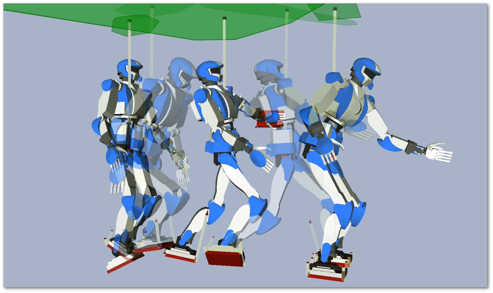
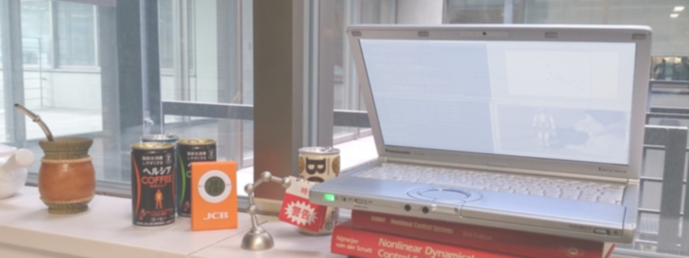
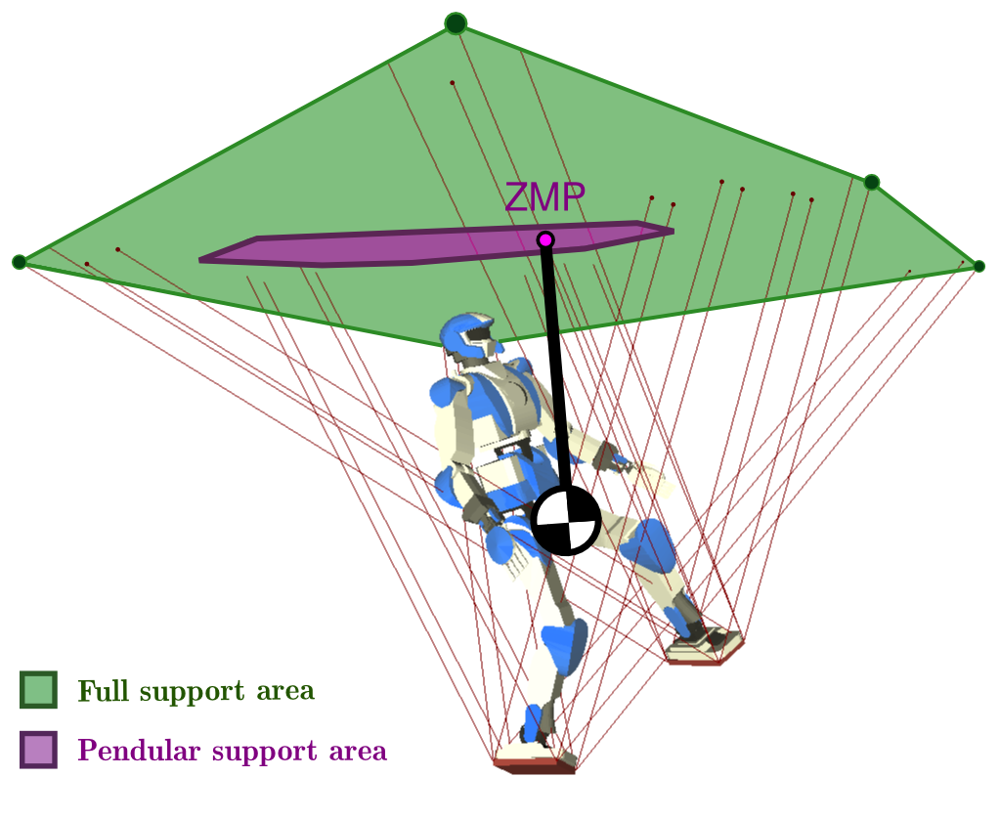

My studies were sponsored by a Monbukagakusho (MEXT) scholarship for which I am very grateful. See the stories below for a more personal account of my time as a PhD student in Japan.
Thesis committee¶
- Yoshihiko Nakamura, Professor at the University of Tokyo (Chair)
- Isao Shimoyama, Professor at the University of Tokyo (Examiner)
- Masayuki Inaba, Professor at the University of Tokyo (Examiner)
- Yasuo Kuniyoshi, Professor at the University of Tokyo (Examiner)
- Wataru Takano, Professor at the University of Tokyo (Examiner)
- Jean-Paul Laumond, Senior Scientist at CNRS (Examiner)
Abstract¶
In this thesis, we explore the questions of motion planning and control for humanoid robots with the aim to integrate motion planning in a fast control loop. Our contributions towards this goal revolve around three axes: kinodynamic decoupling, force-space curtailment, and dimensional reduction of the control space. In the first one, we decouple the kinematic and dynamic components of the planning problem by an original integration with time-optimal control methods. This approach allows us to keep planning in a geometric space, the benefits of which we demonstrate both empirically and through theoretical proofs. In the second axis, we focus on the contact aspects of planning. To avoid slippage or other contact losses, planners usually consider a large number of contact forces and their associated Coulomb friction cones. We show how this redundant representation can be reduced to contact wrenches, unique to each contacting articulation, and propose the first analytical derivation of the associated frictional wrench cone for rectangular contact surfaces. We then connect these developments to the gravito-inertial wrench for whole-body motion planning. However, we note that using wrenches for planning leads to challenging open questions such as the interpolation of the non-holonomic angular momentum. We attack this problem with a paradigm shift: rather than controlling wrenches, we generalize the notion of ZMP (point where the tangential component of the gravito-inertial moment vanishes) to that of "ZMP of a wrench". We then propose efficient algorithms to compute the associated support areas, and show how to use these tools to generate locomoting trajectories from simplified dynamics model such as the Linear Pendulum, even in arbitrary multi-contact scenarios. This reduction of the control space rounds the third and last axis of the computational foundations advanced by this thesis. We demonstrate the applicability of each by simulations and empirical experiments on the HRP-4 humanoid robot.

Résumé¶
Cette thèse explore les questions de la planification et du contrôle du mouvement pour les robots humanoïdes, en se donnant pour objectif de jeter les bases calculatoires qui permettront d'inclure cette première dans une boucle de contrôle haute-fréquence. Ces bases se répartissent en trois axes : découplage kinodynamique, réduction de l'espace des forces, et réduction de l'espace de contrôle. Dans le premier, nous séparons les composantes géométrique et dynamique du problème de planification par des méthodes issues de la paramétrisation en temps optimal. Cette approche permet de maintenir un espace de planification purement géométrique, dont nous démontrons l'intérêt à la fois empiriquement et par des preuves théoriques. Nous nous concentrons ensuite sur l'aspect continger (Relatif au contact ; du latin contingo pour toucher, saisir.) de la planification humanoïde. La nécessité d'éviter les pertes de contact oblige généralement les planificateurs à considérer un grand nombre de forces de contact associées à des cônes de frottements de Coulomb. Nous montrons comment réduire cette représentation redondante à des torseurs de contact, uniques pour chaque articulation, et proposons la première dérivation analytique du cônes de frottement torsoriel pour les surfaces de contact rectangulaires. Nous connectons ensuite ce développement au cône du torseur gravito-inertiel pour la planification corps complet. Nous remarquons toutefois que l'utilisation de torseurs pour cette tâche pose des questions difficiles telles que l'interpolation du moment angulaire, qui est une grandeur non-holonome. Nous y répondons par un changement de paradigme : plutôt que d'utiliser ces torseurs directement, nous introduisons une généralisation de la notion du ZMP (point d'annulation de la composante tangentielle du moment gravito-inertiel) à des torseurs généraux. Nous proposons ensuite des méthodes efficaces pour calculer la zone de support du ZMP généralisée, et montrons comment celles-ci peuvent être utilisées générer des trajectoires locomotrices à partir de modèles dynamiques simplifiés tels que le pendule linéaire. Cette réduction de l'espace de contrôle à l'aide de modèle simplifiés constitue le troisième et dernier axe des bases calculatoires avancées par cette thèse. Nous démontrons l'applicabilité de l'ensemble de ces propositions par des simulations et expériences sur le robot humanoïde HRP-4.
Content¶
| Revised manuscript (March 10, 2017) | |
| Submitted manuscript (March 24, 2016) | |
| Official page on the University of Tokyo Repository | |
| 10.15083/00074003 |
BibTeX¶
@phdthesis{caron2016thesis,
title = {Computational Foundation for Planner-in-the-Loop Multi-Contact Whole-Body Control of Humanoid Robots},
author = {Caron, St{\'e}phane},
year = {2016},
month = jan,
school = {The University of Tokyo},
url = {https://scaron.info/papers/thesis.pdf},
doi = {10.15083/00074003},
}
Revision history¶
- March 10, 2017: thanks to Sylvain Miossec for spotting an interpretation mistake on page 82.
- February 1, 2016: official version archived in the UTokyo Repository.
Stories¶
I did my PhD studies at the Nakamura Lab (as of 2021 it has become the Dynamics Control Systems Lab). All undergrad and grad students mostly worked in a big open space, room 82C1 on the eight floor of Engineering Building number 2, on the historical Hongo campus of the University of Tokyo. The campus itself was an enjoyable area by Tokyo standards, with a small wood, a pond, and reminders that the Uni was one of Japan's red brick universities. PhD students in the lab sat by the windows. Here is what the view looked like from my desk:

The room was studious most of the time, but with so many students we also had our fair share of kerfuffle and heated discussions. When Dark Souls II was all the rage, Tianwei Zhang and I contributed heavily (^_^") Later on I moved to a quieter room with staff members.
DARPA Robotics Challenge¶
On the technical side, the highlight of my time as a PhD student came when our lab passed the qualification to participate to the DARPA Robotics Challenge (DRC) as Team Hydra. This indirectly followed the acquisition of SHAFT (the Japanese company that won the DRC Trials in December 2013) by Google, which had sent waves through the Japanese government and decided it to fund several teams for the DRC Finals in June 2015. While many teams were in the loop since the Virtual Robotics Challenge (June 2013) or DRC Trials (December 2013), our teams started to get out of their labs in the winter of 2015.
Things happened fast: from February 2015, we would go test our robots in an abandonned school campus in the Sagamihara suburb of Tokyo (way to get PhD students to learn how to wake up early!). In May 2015, the government had arranged rental of a warehouse near Las Vegas where we flew with our robots, renting cars and a house to lodge the team together (intensity of colorful memories increases a notch :D). Finally, we all drove to Pomona, California for the final event.

The team went through a lot during these times, and many of the resulting stories and symbols stay with us (See You Again, In-N-Out Burger, ...) As I wrote in the foreword of my eventual thesis, we get to appreciate each others pragmatically during times of stress: personally, my respect went to Pr Kaminaga, Pr Sugihara and Pr Yokokohji who, rain or shine, kept their minds focussed on making contributions that made sense.
Hotel Lancelot¶
On the creative side, the highlight of my PhD happened in the lobby of the Hotel Lancelot in Rome. It lasted 20 min :-) You see, in robotics in 2015, there was a gap between practicioners of big models (whole-body control) and reduced models (linear inverted pendulum). The former were successful at slow, carefully planned tasks, but the latter were successful at dynamic walking, which is where we wanted to go. Their solutions relied on the zero-tilting moment point rather than contact forces, and a corresponding support area defined as "the convex hull of ground contact points". This definition seemed unnervingly arbitrary. Also, it only worked for walking on flat floors, while the big-model approach was able to handle all kinds of contacts. We were puzzled by this gap, but it was the state of knowledge at the time.
I had been munching on this question for a while when we met with Quang-Cuong Pham in Roma for the RSS 2015 conference. Cuong had been my advisor since the very start of my PhD, but we hadn't had a chance to talk for a long time because of the DRC. We sat in the lobby of our hotel to catch up, and first thing he knew, I unleashed on him a torrent of equations. I was stuck! All of these constructs were valid either on the big-model side or on the reduced-model side, but none of them crossed the gap nor answered our question. It is then that Cuong made this magic, inoccuous comment that sparked a eureka moment, and was the basis of what fellow roboticists would later call "the umbrella paper":

Honestly, I don't remember what the comment was (^_^) I just recall that Cuong was spontaneously curious about these objects we were dealing with, and that his first suggestion was something geometric, in the lines of "what happens if we project the lines from the friction cones?" It turned out to yield immediately an interesting object, which we called the full support area, and we already had all the tools to construct it. Things got exciting very fast!
Weeks later, it would turn out not to be the "useful" idea for locomotion control, which we eventually derived and called the pendular support area. Yet this eureka idea was key in the discovery process. It essentially went like this: "We have a support area that's derived from the big model, w00t! Wait, why is it so big? Oh, that's because the reduced-model pipeline makes these other assumptions we didn't take into account. They break our geometric construction... Do we need that construction? Oh, we don't, we can do polyhedral projections instead!" And so forth.
What I learned from this is that having a strong intuition that "there is something there" is not sufficient to reach new ideas. Many of your peers, past and present, have been there, felt the same, and didn't bring it out (or they did and you failed your lit' review, shame on you! ;p). In our case, it is Cuong's curiosity that teleported us out of the conceptual valley, and brought us a lot of fun on the new heights of "hey, look at what this thing is doing!"
Pre-defense and defense¶
At the University of Tokyo, PhD theses go through a "pre" defense where an internal jury (other professors from the same university) decides if the work is ready for a public presentation. Unfortunately the jury is usually unchanged for the final defense, so that PhD students don't get the richness and challenge of a world-class jury of experts from their field (like it is the norm in Europe, for instance). With this system, the "pre" defense is the real thing for them, and the actual defense becomes more like a scripted show. Fortunately for me I was blessed with equally memorable pre-defense and defense! At pre-defense question time, one of my jury members pulled a trick on me that illustrated very well how a clever falcon hides its claws (^_^) Later on, my professor managed to invite Jean-Paul Laumond to my jury, which (as far as I understood involved getting the uni to update some of its internal regulations, and) contributed significantly to the quality of the final defense.
Discussion ¶
Feel free to post a comment by e-mail using the form below. Your e-mail address will not be disclosed.